CHASE BRANDON GALE
International Man of Technology
Always building software.
Always learning, exploring and growing.
Always staying humble, willing to listen and willing to change.
Always ready to help, offer guidance or teach.
Always tinkering with the IDE of life!
Work
Life
First Programming Job!
"Cool Jewels / Phillips International" hired me at 16 to administer their network; after proving myself, I developed several VB apps to replace costly existing software.
Sebatical I: Exploring Argentina
One of my best friends was going to visit family and invited me to tag along - that kind offer combined with my adventure bug planted the seed that blossomed into a life-long love affair with this amazing country.
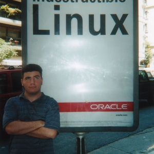
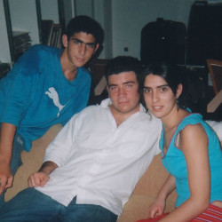
First FinTech Job!
"FX Solutions" hired me to develop a VB control for technical analysis (charting - think candlesticks and fibonacci spirals, M.A.C.D. and the like) - after crushing that product, I expanded my skillset to include Macromedia (acquired by Adobe) Actionscript, developing first a web-based charting tool in Flash/Flex as a stand-alone product, then continuing to develop a full trading application.
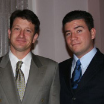
First New Car!
Embraced my success and pulled the trigger on a brand new Mazda 6. I loved that car so much! Fun Fact: The car was also cursed, I was rear-ended FIVE (5) times on 595!
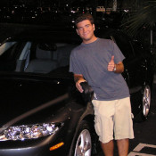
Backpacked from Argentina to Brazil via Uruguay and Paraguay
One of my first "big" adventures, cross-continent hiking/backpacking/bussing and general debauchery. Started a lifelong tradition of taking a sebatical, post corporate breakup!


First MedTech Job!
"PayerFusion" hired me to automate their workflow: receiving medical claims from doctors. Utilized CV and rudimentary AI to facilitate this process. Hired and ran a team of 4: 1 UX specialist and 3 junior engineers, the catalyst for my future career of mentorship.
Hiking the Florida Trail
Lots of sun, lots of bugs, lots of gators and lots of fun - and in some places, palm/sawgrass fields that feel infinite.
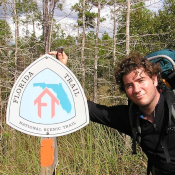
Second New Vehicle!
My lifestyle was transitioning more and more to outdoor activities, mainly kayaking - when the four door jeep debuted I had to have it!! So many great memories and so many great adventures!
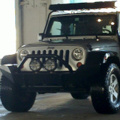
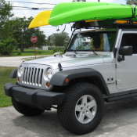
Sebatical II: AT Thru-Hike Attempt!
3 months in the woods and loving every second of it, well, mostly! One of the bigger regrets of my life so far was getting off early; however, WFH was not common at this time and I received an offer I could not refuse!
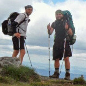
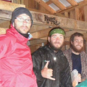
FinTech Part II, FX Boogaloo!
"TAB Networks" hired me to create a web version of their desktop trading application. Node microservices, Angular and C# gateways, oh my!
Sebatical III - Cruisin' USA
Traded my Jeep in for a pickup and a camper, embarked on a whirlwind tour of the States!
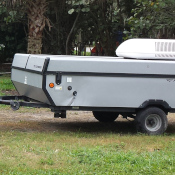
AdTech Ahoy!
Hired from abroad, I moved to NYC upon my return to the states to help "MadHive" in it's efforts to revolutionize how internet ads are tracked an monitized - a merger of the latest in TensorFlow, web3, and some cool ETH chains!
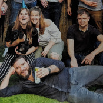
Sebatical IV - Backpacking Europe
Sweden to Prague, Prague to Poland, Poland to Hungary and Hungary to Austria!
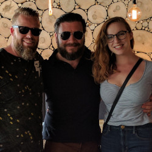
FinTech Part III, The Return of the King
Now in a fully remote world, I joined "MEMX", i.e. "Members Exchange", to help realize their vision of a SaaS based stock exchange that prioritized their members' needs over the market.
RV Life!!
With software engineering going fully remote, I took the plunge and purchased a 33' Class A and a starlink dish to take the party on the road! 38 States, Northern Mexico and Western Canada so far!
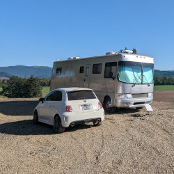
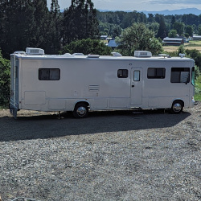
Launched my first (actually profitable) startup!
While I've released plenty of open-source, free and ad-driven projects to the general public, this is my first venture to bill for a product and to be cash flow positive!
Camino de Santiago via Camino Francés
~500 mile hike from Saint-Jean-Pied-de-Port in France to Santiago de Compostela in NW Spain! Several incredible weeks of culture, 20 mile hike days, cerveza and new friends!
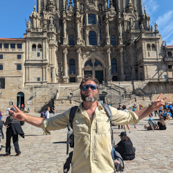
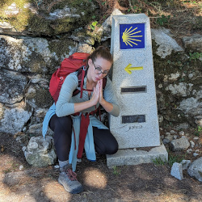
Sebatical V - 3 Months in Argentina
Argentina is the country I have visited the most outside of the U.S. - I will never have enough Argentine food, culture, experiences and friendship.
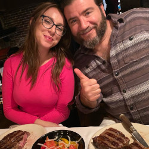
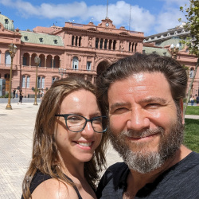
Planting Roots - The Beginnings of a Great PNW Adventure
After travelling and exploring almost every U.S. State, the Pacific Northwest constantly blew our expectations out of the water. From the people to the mountains - my hiker heart is happy, my foodie frontal lobe is satisified, and my soul feels at peace in the rainforest. Bought some land and the house is being built!
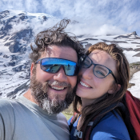
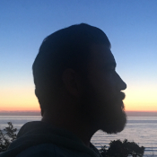